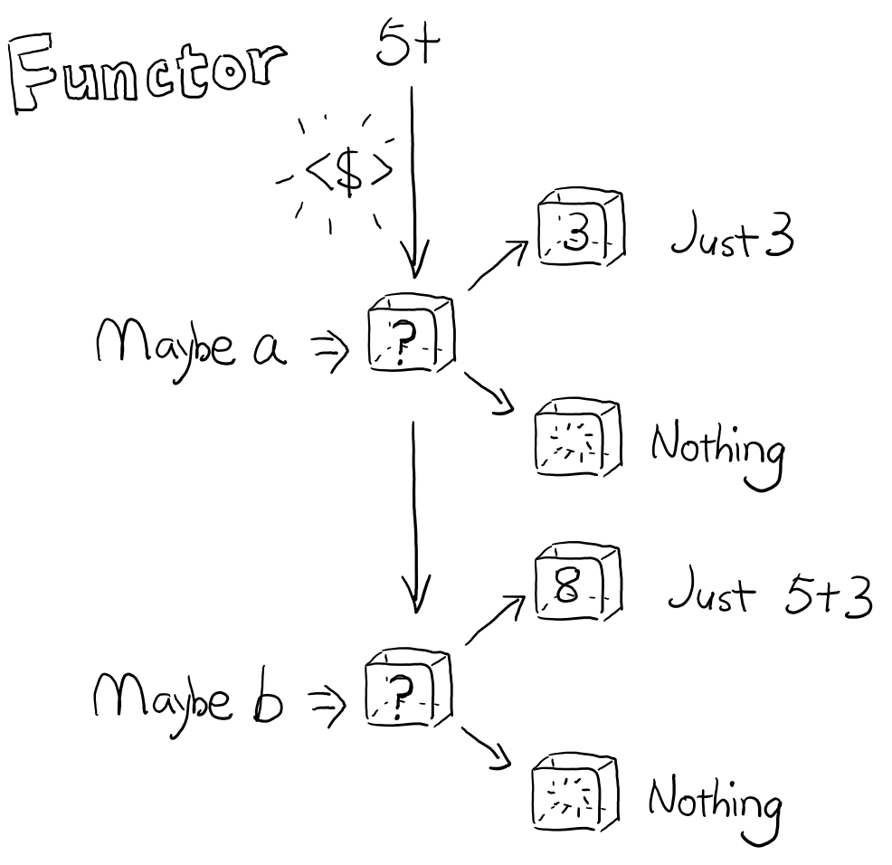

1 Monadic编程
这是 Haskell 弄出来的神秘玩意，但你可能没有在意，其实在前端世界早都被玩腻了。
1.1 链式调用
说到 链式调用 ，用过 jQuery 或是 Underscore 的人再熟悉不过了。虽然我一直在强调函数组合如何复用性更好，更持续可组合，但是其实这两者之间并不对立，反而应该是可以互相结合的两种非常好的模式。
作为前端比较流行的模式，我们其实甚至不需要借助于任何库也可以进行简单的链式调用，比如 ES5 的 Array：
[1,2,3,4] .map(n=>n+1) .filter(n=>n%2**0) .reduce((acc, n)=>acc+n);
由于 Array 的 map，filter 都仍然返回 Array，所以很自然的，可以链式的继续调用 Array 的方法。
当然，如果做这种运算我肯定是更推荐使用 Transducer 来做，将会更高效而且易于组合再利用。相比之下，链式调用其实有着更为适用的场景，那就是 ES6 标准中新加入的 Promise。
1.1.1 Promise
Promise 跟语义上一样，表示将来会发生但是还没有发生的事情。在不同的编程语言中名字略有不同，但都是同一个东西。只是，Promise 在 JavaScript 中是非阻塞的，也就是你不能直接 await 一个 Promise， 这样会使得主线程被阻塞。
而在 Clojure 中，可以
- 定义一个 promise
- 非阻塞的开启另一个线程给 promise 递一个值
- 阻塞的从 promise 把值取出来，
@相当于 await
(def fancy-promise (promise)) ; 1 (future (Thread/sleep 1000) (deliver fancy-promise (+ 1 1))) ;2 (print "waiting...") @fancy-promise ;2 ;=> waiting... ;一秒后 => 2
但是在资源有限的前端 JavaScript，宝贵的主线程只有一个，是不能让你能阻塞的去取一个 promise 的值的。
var defered = when.defer(); setTimeout(_=>defered.resovle(1+1), 1000); defered.promise.then(_=>console.log(_));
你会发现 JavaScript 的 promise 略有不同。首先，在 JavaScript 中不能开一个线程去等上1秒，再给 promise 递一个值。前端只能依靠浏览器的 timer 线程去计算时间，1 秒后回调递值的函数；其次，当然也不能阻塞主线程来等待 promise 的值，只能通过传入回调函数给 promise 的 then 方法，来接受 promise 中的值并做处理。因为 JavaScript 引擎只有一个线程，这意味着如果我们阻塞的等待 promise 的值：
// 伪代码 ... setTimeout(_=>defered.resovle(1+1), 1000); await defered.promise
那么 defered.resovle(1+1) 永远不会被执行。因为 JavaScript 是事件循环的并发模型1，意味着事件循环会不停的从消息队列中拿任务。所以这几行代码大概的执行过程是这样的：
- setTimeout 的执行分派了浏览器 timer 去计时。
- promise.then 的执行给 promise 挂了一个回调，当 promise 满足时调用。
- 代码都执行完了， 消息队列里此时没有消息。
- 1秒后 timer 把
defered.resovle(1+1)放入消息队列。 defered.resovle(1+1)随即促发 promise.then 上的回调。
所以如果 2 被阻塞，意味着 4 放回到消息队列的任务永远也轮询不上，因为当 event loop 还正阻塞在 2，而 2 却在等 5 的结果。
因此，前后端 JavaScript 的所有的 IO 操作（timer，XHR，worker）才被设计成为非阻塞的。
回到我们的问题上来，我们不知道 promise 什么时候有值，也不能阻塞的等待 promise 有值，所以只能是把回调函数给 promise，什么时候有值了再回调这个函数。而这个回调函数需要通过 promise 的 then 方法传给 promise。跟使用 jQuery 一样，then 返回的还是一个 promise，因此我们可以继续调用 then 方法给更多的的回调函数。
当然，除了传入一个接受 promise 内的值，返回另一个值（或不返回）的函数，还可以传入一个返回 Promise 的函数：
when.promise(resolve=>setTimeout(_=>resolve(1),1000))
.then(value=>when.promise(resovle=>setTimeout(_=>resolve(value+1),1000)))
.then(_=>console.log(_))
两秒后打印出来的是2，而不是一个 promise。注意这里用的是更简洁的创建 promise 的方法，直接给 promise 的参数传入一个 resolve 函数，告诉 promise 什么时候能 resolve。 至于为什么最终打印的不是 promise，而是 promise 的值，我想看完 7.3 节 Monad 自然会明白。
1.1.2 高阶 Promise
不像普通的操作值，可以通过高阶函数轻松的操作整个数组：
var data = [1, 2, 3, 4]; var double = data.map(_=>_*2); console.log(double); // [2,4,6,8]
如果是一个 promise 的数组，在想做 map 或者 filter 之类的用高阶函数来操作数组似乎就遇到了麻烦。
var data = [when(1), when(2), when(3), when(4)]; var double = data.map(_=>_*2); console.log(double); // [NaN,NaN,NaN,NaN]
当然，想着都不可能会工作。这里期望的结果应该是 promise 级别的 map，而不仅仅是把函数 map 到值上。选择使用 when 正是因为它提供更强大的 promise，不但有操作单个 promise 的方法，还提供通过 map，reduce 等高阶函数轻松的操作 promise 的数组。 只需要做小小的改动， 使用 when.map 方法就好了：
var double = when.map(data, _=>_*2); double.then(_=>console.log(_)); // [2,4,6,8]
1.2 Monad
我为什么要在链式调用之后介绍 Monad，这个来自 Haskell 的这个看似令人费解的东西呢？虽然说当你问一个 Haskell 的人如何理解 Monad 时，他们经常会让你先了解下 Category Theory，但其实并没有这个必要。Crockford 在解释 Monad 的时候就说过：
吃墨西哥鸡卷前要先学会墨西哥语吗？ —— Crockford
所以，我也并不打算在这里讲晦涩的范畴论（Catergory Theory），当然如果感兴趣的话网上有大把的资料。不过，你有可能会在本节结束时能理解下面这句话：
Monad 就是自函子范畴上的一个幺半群。
那么，在了解 monad 之前，我们先来聊聊函子（Functor）。
1.2.1 函子（Functor）
Functor 简单的来说是可以被 map over 的类型. 但是什么叫 map over？
比如 Array 就可以说是可以被 map over 的类型，来看看 Haskell 中如何解释的：
ghci > :t fmap fmap :: (a -> b) -> fa -> f b
这里的 fmap 就是 map over 在 Functor 上的函数。这个函数只干一个事情，
(a -> b) -> f a -> f b 这个类型标记告诉了我们，一个 a 到 b 的映射在接收 a 的 Functor 之后，返回一个 b 的 Functor。
跟所有的数学定义一样，这个太抽象，我们来具体化一下以便理解。例如我现有有一个 number 类型的 a，那么我可以定义一个由 number 到 string 的映射，也就是接受 a 为参数的函数 f，使得 f(a) 返回 string 类型 b。
var f = x => x + 'b'; var a = 2; typeof a == 'number'; var b = f(a); // => 2b typeof b == 'string'

那么如果 a 存在一个容器 fa 中，显然我们不能简单的通过 f(fa) 就能得到一个 b 类型的容器 fb。制作一个容器很简单，只需要创建一个对象就好了，这里我们把这个对象叫 Just 好了。
function Just(val){ this.value = val; } var fa = new Just(a); f(fa) // => [object Object]b
显然这时候映射 f 是不工作的，输出的是一个奇怪的结果，而不是期望的包含 b 的容器 fb，也就是 Just(b)。
要实现这种映射其实也非常简单，只需要容器 Just 能告诉映射 f 如何应用到容器内的值就好了，而这种如何将函数应用到自己内部值的方法，就是 fmap，而实现了 fmap 的容器，就叫做 Functor。
Just.prototype.fmap = function(f) { return new Just(f(this.value))} Just.prototype.of = function(value) { return new Just(value) } var fa = Just.of(a); var fb = fa.fmap(f); // => Object { value: "2b" } fb instanceof Just; // => true
可以看到通过 fmap，得到了期望的在容器 Just 中的值 "2b"。其中的 of 方法是为了在构造一个 Just 容器时代码更可读一些。

而刚刚的 Just 就是 Functor，由于它实现了 fmap，所以就可以说是可以 map over 了，自然就成为了 Functor。
所以照这个逻辑，那么我只需要做一点点手脚，那么 Array 也会变成 Functor 了：
Array.prototype.fmap = Array.prototype.map
等一下，出自 Category 理论，难道就没有写什么 Functor 的定理什么的？
当然，由于出自完整的理论，这里也顺便提一下 Functor 具有以下性质：
- fa.fmap(x=>x) 恒等于 fa
- fa.fmap(x=>f(g(x))) 恒等于 fa.fmap(g).fmap(f)
我们先来测试一下 Array：
[1,2,3].fmap(x=>x); // => [1,2,3] var f = x=>x+2 var g = x=>x*2 [1,2,3].fmap(x=>f(g(x))); // => [4,6,8] [1,2,3].fmap(g).fmap(f) // => [4,6,7]
看上去是没有什么问题的，我就不充分证明了，但是这个定理在后面的理解会是非常有帮助的。
1.2.2 Applicative Functor
现在，我们已经有 fmap 可以把一个函数应用到一个 Functor 上，接着来看看下一个概念——Applicative Functor（下面简称 Applicative）。有了 Functor 之后，我们可以直接给容易加一组映射，但是，函数既然是一等的，那么值能放到容器中，函数是不是也可以放到容器里呢？
var fplus2 = Just.of(x=>x+2); fplus2(Just.of(3));
显然在一个含有函数的容器是不能直接应用到任何容器或者值的，fmap 显然也不能帮我们把装有函数的容器打开。这时候 Applicative 就出来解决这种问题了。
Just.prototype.ap = function(container){ container.fmap(this.value); } fplus2.ap(Just.of(3)) // => 5
没有想到，只是这么简单就又实现了 Applicative 吧。 现在知道为什么我先介绍 Functor 了吧。所以现在看来，所有的 Applicative 都也是 Functor，因为需要实现 fmap 方法。
所以来看下 Applicative 的类型注解 f (a -> b) -> f a -> f b ，一个 a 到 b 映射的容器，接收 a 的容器返回 b 的容器，那么这个容器就是 Applicative。
同样的，Applicative 也具备一些性质：
- 恒等性：
a.of(x=>x).ap(value)恒等于 value - 同态：
a.of(f).op(a.of(x))等于a.of(f(x)) - 交换律：
u.ap(a.of(y))等于a.of(f=>f(y)).ap(u)
刚好试一下我们的新 Just 有没有符合这些性质：
Just.of(x=>x).ap(3) //=> 3 Just.of(x=>x+1).ap(Just.of(2)) == Just.of((x=>x+1)(2)) // true Just.of(x=>y).ap(Just.of(3)) == Just.of(f=>f(3)).ap(Just.of(x=>y)) //true
如果把容器看成是 lift 的话，那么把坐电梯下来（把容器剥开，这里既是去掉所有的 Just.of 和 ap），他们其实保持着函数与值同样的关系：
(x=>x)(3) //=> 3 (x=>x+1)(2) == (x=>x+1)(2) // true (x=>y)(3) == (f=>f(3))(x=>y) //true
1.2.3 含幺半群（Monoid）
前面说了两个抽象的 Functor 与 Applicative，分别是两种不同等级的 lift 操作，前者 lift 了值，后者 lift 函数，但都是为了 lift 或者说抽象函数应用，例如 f(x) 。
那么值之间的二元操作该如何抽象或者说 lift 呢？比如简单的值之间的算术运算加法：
1 + 2 //=> 3
这并不是想 f(x) 的简单一元操作，这里如果把 + 号理解成函数的话，这将是二元操作：
add(1, 2) //=> 3
那么这里需要抽象三个东西，或者说把三个值放到容器中，或者所如何把容器中的两个值叠加起来？
这样看来，无论是 Functor 或者 Applicative 都没有办法把这些盒子撮合到一起，变成一个含有3的盒子 Just.of(3) 。
于是，我们需要把它们抽象成 Monoid，先别着急问 Monoid 的概念是什么，等我举完这个例子先。这里用 Just 来做算术运算不太合适，请允许我换一个语义更好一些的容器比如 Sum。这里我们要做的 大概是像这样叠加两个容器：
Sum.of(1).append(Sum.of(2)) // => Sum.of(3)
所以重点是这个 append 方法，实现上应该要把两个盒子内的值做加法：
Sum.prototype.append = function(anotherSum){ return anotherSum.fmap(value=>this.value+value); }
有意思的是，加法会存在一个类似 identity 的元素 empty，使得任何数加 empty 值完全不变，因此加法的 emtpy 就是 0。那么当我抽象到容器之后，应该符合同样的规则，Sum 应该也存在一个 empty，使得 Sum.of(any).append(Sum.empty) 任然是 any。
Sum.prototype.empty = Sum.of(0);
没有错，那就是 Sum.of(0)，我们管这个 empty 叫做 _幺元_（identity element）. 好了这个简单的例子讲完也实现了，现在可以来定义 Monoid 了，现在这个 Sum 就是 Monoid， 因为他
- 存在一个二元操作返回值仍然是 Sum
- 有一个幺元，满足
Sum.empty.append(Sum.of(2)) == Sum.of(2) - 满足结合律
Sum.of(1).append(Sum.of(2)).append(Sum.of(3)) == Sum.of(2).append(Sum.of(2).append(Sum.of(3)))
对于 Monoid 的实现非常简单，可能并没有人会关系实现，而更重要的是，为什么要满足这些条件，这些公理能带来什么好处。

想一想我们要叠加多个数，可以这样：
1+2+3+4+5
当然有更高雅的 reduce 方式：
[1,2,3,4,5].reduce((_1,_2)=>_1+_2)
好了，那么抽象到容器，我们是不是可以干同样的事情？
[Sum.of(1), Sum.of(2), Sum.of(3), Sum.of(4), Sum.of(5)].reduce((_1,_2)=>_1.append(_2))
1.2.4 Monad
好了，有了包在容器中的函数或值之后，我们可以 fmap 一个函数到容器，我们还可以直接应用含有函数的容器到另一个容器，我们还可以像函数组合一样组合这些容器们。但是，还记得与函数组合（compose)一起介绍的管道（pipeline）吗？通过管道，可以让函数组合的顺序更符合阅读习惯，更适合一眼就能看出数据的流向。激动人心的时刻到了，Monad 这个被解释的过于抽象的东西，我要说其实就是容器界的管道。
如果我告诉你在前一节其实已经见过 Monad 了（如果不小心跳过了上一节，赶紧回去补一补），你会信吗？
Promise(resolve=>0) .then(x=>x+1) // 1 .then(x=>2/x) // 2
当然，这个并不是 Monad，这是简单的 pipe，等同于：
mori.pipeline(0, x=>x+1, x=>2/x)
正常的函数组合的顺序应该是这样的：
(x=>2/x)((x=>x+1)(0))
运用我们前面学过的 Applicative Functor，来把这些都装容器里试试，首先，来把函数组合装容器中，继续使用我们刚刚实现的 Just：
Just.of(x=>2/x).ap(Just.of(x=>x+1).ap(Just.of(0)))
本来看函数的嵌套调用都已经有些头晕了，这回全部包了层容器，更是摸不着头脑了。试试用 Functor 实现：
Just.of(0).map(x=>x+1).map(x=>2/x)
似乎已经非常像 pipeline，以及可以链式编程的 Promise 了，但是现在问题来了，如果我再 map 一个函数，而且这时输入变成了 Just.of(1)
Just.of(1).fmap(x=>x+1).fmap(x=>2/x).fmap(x=>x*x)
你会看到直接抛异常了，因为输入改成 Just.of(1) 之后，当数据通过第一个函数返回的是 0，也就是当 Just.of(0) 再 map(x=>2/x) 相当于除零运算，当然是异常。
好，这时候如果能让我避免异常，可以在 map 里的函数加 try catch，或者 if else 验证输入条件。但是，最后的那个 map 怎么办？如果是 try catch 没有返回，意味着后面的 x*x 自然也会出错，如果是 if else，那么 else 里面应该返回什么呢？
如果能返回一个容器，map 任何函数到它都还是它自己，似乎就可以忽略掉一旦出错后面的一大堆 map 了。
function Nothing(){}; Nothing.prototype.fmap = function(){ return this; } var nothing = new Nothing;
问题是，Just 不管怎么 fmap 都是 Just，如何能让它变成 Nothing 呢？
Just.of(1).fmap(x=>x+1).fmap(x=>{
if(x==0) return nothing;
return Just.of(2/x);
})
没有错，这段代码返回的会是一个在容器里的容器， Just.of(Nothing) 或者 Just.of(Just.of(2/x)) ，所以我们还需要修改后面 map 中的函数程序才能正常工作：
Just.of(1).fmap(x=>x+1).fmap(x=>{
if(x==0) return nothing;
return Just.of(2/x);
}).fmap(x=>x.fmap(y=>y*y))
这显然越改越复杂了，现实包一层，后面的 fmap 再拆掉前面包的这一层容器，那我们何必要多包一层呢？不如直接不包，比如将包和拆包放到 flatmap 方法中。
Just.prototype.flat = function(){ return this.value } Just.prototype.flatmap = function(f){ this.fmap(f).flat(); } Nothing.prototype.flatmap = Nothing.prototype.fmap
当然 ，这样我们能写出一个更优雅的带容器的 pipeline 了：
Just.of(1).flatmap(x=>Just.of(x+1)).flatmap(x=>{
if(x==0) return nothing;
return Just.of(2/x);
}).flatmap(x=>Just.of(x*x));
// => nothing
1.2.5 TODO Monad 就是自函子范畴上的一个幺半群
但是举了这么些例子，怎么一点也看不出来 monad 与 monoid 的关系呢？倒是很明确 Monad 是个比较特殊的 Functor。
我们需要进一步的抽象才能解释这句话，首先，回顾前面 Monoid 的知识，比如那个 Sum 的 Monoid。
Sum.of(1).append(Sum.of(2)).append(Sum.of(0)) // => Sum.of(3)
这个 Monoid 很明显，它的二元操作是 append ，幺元是 Sum.of(0) ，范畴是 Sum 。 为了更明显我们可以降一个维度（范畴），把 Sum.of(1) 降成 1
(1 + 2 + 0)
但是 Monad 哪来的二元操作啊？一个 flat ，一个 fmap ，都是一元操作啊？
如果我们降一个维度， 到只有数字的维度上，
(1.2).3 = 1.(2.3)
二元操作 + 可以使得这个等式成立。
而幺元 0，又可以使得
0.2 = 2 = 2.0
在二元操作 + 上成立。
所以我们得到的 monoid 为 (数字集合，二元操作 + ，幺元 0)。
同样的，上升到函子的范畴上2，注意是自函子 范畴 上的幺半群，就代表的是函子范畴而不是函子实例是幺半群，所以以 Maybe 为例，就需要符合：
(Maybe.Maybe).Maybe = Maybe.(Maybe.Maybe)
能找到一个二元操作使得上式成立？而不是：
(Just.of(1).append(Just.of(2))).append(Just.of(3)) = Just.of(1).append(Just.of(2).append(Just.of(3)))
这个二元操作就是我们刚实现的 Just Monad 的 flat。我们很容易可以把 flat 代入到式子变换成以下格式，
flat(flat(Maybe.Maybe).Maybe) = flat(Maybe.flat(Maybe.Maybe))
其中的 . 是两个类型组合在一起。如同函数的组合是 f.g x= f(g(x)) ，在函子范畴上的组合就是 Maybe 类型的值，在一个 Maybe 类型的容器中：
Maybe.Maybe = Maybe[Maybe]
再代入一遍，就非常清晰结合律的等式是成立的了：
flat(flat(Maybe[Maybe])[Maybe]) = flat(Maybe[flat(Maybe[Maybe])])
大声念出来应该就是：
flat 一个容器为 flat(Maybe[Maybe]) 类型，其值类型为 Maybe 得到的类型等于，
flat 一个 Maybe 类型，其内值类型为 flat(Maybe[Maybe]) 所得到的类型。
听起来比较像绕口令，仔细看看等式就能理解了。另外一个 monoid 的法则是需要有一个幺元，满足：
?.Maybe = Maybe = Maybe.?
我们很容易能猜到把 Maybe 代入就是我的解，因此任何 Maybe 类型都是幺元：
flat(M[M]) = M = flat(M[M])
所以，flat 就像 moniod 里的 append 一样，但是它并不连接值或是容器，而是连接函子组合，让函子在不同范畴间变换

到这里，我可以告诉你现在的 Just 就是 Monad 了， 它是 Functor 的加强，把 fmap 的结果铺平（flat）。同时又是 Applicative 的加强， Applicative 让我们可以用一般函数作用到在容器中的值，而 Monad 让我们可以把一个容器中的值传入一个接收值的函数中，并返回同样的容器。
1.3 走钢丝
如果用简单的 Monad 来表示薛定谔猫就再简单不过了，比如往盒子在加放射性原子,如果猫活着,就是绿巨猫, 如果猫是死的,那就是绿巨死猫。
Box.of(cat).flatmap(cat=>{
var hulkcat = radioactive(cat)
if(hulkcat=='dead')
return BloodyBox.of(hulkcat)
return Box.of(hulkcat)
}
所以可以说我们最终得到的若不是（either）含有绿巨猫，就是含有一只绿巨死猫的血淋淋的盒子。这个例子过于简单，我们来一个更实际的例子。
1.3.1 皮尔斯走钢丝
皮尔斯决定要辞掉他的工作改行试着走钢丝。他对走钢丝还挺在行的。不过仍有个小问题，就是鸟会停在他拿的平衡竿上。他们会飞过来停一小会儿，然后再飞走。这样的情况在两边的鸟的数量一样时并不是个太大的问题。但有时候，所有的鸟都会想要停在同一边，皮尔斯就失去了平衡，就会让他从钢丝上掉下去。
我们假设两边的鸟差异在三个之内的时候，皮尔斯仍能保持平衡。
一般解法
首先看看不用 Monad 怎么解：
var landLeft = function(n, pole){ return [pole[0]+n, pole[1]]; } var landRight = function(n, pole){ return m.reverse(landLeft(n, m.reverse(pole))); } var result = m.pipeline([0,0], m.partial(landLeft, 1), m.partial(landRight,1), m.partial(landLeft, 2)); console.log(result); // => [3 1]
对了，还差一个判断皮尔斯是否掉下来的操作.
var landLeft = eweda.curry(function(n, pole){ if(pole=='dead') return pole; if(Math.abs(pole[0]-pole[1]) > 3) return 'dead'; return [pole[0]+n, pole[1]]; }); var landRight = eweda.curry(function(n, pole){ if(pole=='dead') return pole; return landLeft(n, eweda.reverse(pole)); }); var result = eweda.pipe(landLeft(10), landRight(1), landRight(8))([0,0]); console.log(result); // => dead
现在来试试用 Either
我们先把皮尔斯放进 Either 容器里让他走钢丝，这样皮尔斯的状态只有打开 Either 容器 才能看见。假设 Right 是装着活着的皮尔斯的容器，Left 是装死了得皮尔斯的容器。
var land = function(lr, n, pole){ pole[lr] = pole[lr] + n; if(Math.abs(pole[0]-pole[1]) > 3) { return new Left("dead when land " + n + " became " + pole); } return new Right(pole); } var landLeft = n=>m.partial(land,0,n); var landRight = n=>m.partial(land,1,n);
现在落鸟后会返回一个 Either，Right 或者 Left。
偷看容器内东西的函数可以是这样的，类似于 fmap，但是这里可以分别对 Either 左右值应用不同的函数：
var stillAlive = function(x){ console.log(x) } var dead = function(x){ console.log('皮尔斯 ' + x); } either(dead, stillAlive, landLeft(2, [0,0]))
好像越来越接近了，但是这里只落了一次鸟，如果我要落好几次呢。这就需要实现 Either 的 flatmap 方法，让小鸟不停的落到皮尔斯的杆子上：
Left.prototype.flatmap = function(fn){return this;}; Right.prototype.flatmap = function(fn){ return fn(this.value) }
当然，应用左右函数的 either 函数实现起来也非常简单：
either = function(left, right, Either){ if(Either.constructor.name == 'Right') return Either.fmap(right) else return Either.fmap(left) }
我们来试试工作不工作：
var walkInLine = new Right([0,0]); eitherDeadOrNot = walkInLine.flatmap(landLeft(2)) .flatmap(landRight(5)) either(dead, stillAlive, eitherDeadOrNot) // => [2,5] <1> eitherDeadOrNot = walkInLine.flatmap(landLeft(2)) .flatmap(landRight(5)) .flatmap(landLeft(3)) .flatmap(landLeft(10) .flatmap(landRight(10))) either(dead, stillAlive, eitherDeadOrNot) // => "皮尔斯dead when land 10 became 15,5" <2>
果然跟预期的一样：
- 在所有小鸟的差值不大于三时，我们可以偷看到皮尔斯还是或者的
- 但是如果一旦大于 3，皮尔斯的就已经死掉，不管之后再怎么落鸟，死的皮尔斯状态不会再变化。
1.4 Monad 在 JavaScript 中的应用
你知道 ES6 有个新的 类型
Promise
吗, 如果不知道, 想必也听过 jQuery 的 $.ajax 吧, 但如果你没听过 promise,
说明你没有认真看过他的返回值:
var aPromise = $.ajax({ url: "https://api.github.com/users/jcouyang/gists" dataType: 'jsonp' }) aPromise /*** => Object { state: .Deferred/r.state(), always: .Deferred/r.always(), then: .Deferred/r.then(), promise: .Deferred/r.promise(), pipe: .Deferred/r.then(), done: b.Callbacks/p.add(), fail: b.Callbacks/p.add(), progress: b.Callbacks/p.add() } ***/
我们看到返回了好多 Deferred 类型的玩意, 我们来试试这玩意有什么用
anotherPromise = aPromise.then(_ => _.data.forEach(y=> console.log(y.description))) /* => Object { state: .Deferred/r.state(), always: .Deferred/r.always(), then: .Deferred/r.then(), promise: .Deferred/r.promise(), pipe: .Deferred/r.then(), done: b.Callbacks/p.add(), fail: b.Callbacks/p.add(), progress: b.Callbacks/p.add() } "connect cisco anyconnect in terminal" "为什么要柯里化（curry）" "批量获取人人影视下载链接" ...... */
看见没有，它又返回了同样一个东西，而且传给 then 的函数可以操作这个对象里面的值。这个对象其实就是 Promise 了。 为什么说这是 Monad 呢？来试试再实现一次“走钢丝”。
1.4.1 Promise 版本的走钢丝
下面我们开始使用 ES6 标准的 Promise。 同样的，我们需要一个接受普通值返回容器的落鸟函数：
var land = function(lr, n, pole){ pole[lr] = pole[lr] + n; if(Math.abs(pole[0]-pole[1]) > 3) { return new Promise((resovle,reject)=>reject("dead when land " + n + " became " + pole)); } return new Promise((resolve,reject)=>resolve(pole)); } var landLeft = n=>m.partial(land,0,n) var landRight = n=>m.partial(land,1,n)
然后就可以开始往皮尔斯的杆子上落鸟了。
Promise.all([0,0]) .then(landLeft(2)) .then(landRight(3)) // => Array [ 2, 3 ] .then(landLeft(10)) .then(landRight(10)) .then(_=>console.log(_),_=>console.log(_)) // => "dead when land 10 became 12,3"
最后一个 then 相当于 either 函数，之前的每一个 then 相当于 flatmap，
1.4.2 When
lift
还记得之前讲 Applicative 时提到的 lift，可以把一个函数装到容器中，而 when.lift 就是把一般函数提升（lift）成一个含有函数的 Pormise。既然变成一个 lifted 的函数，当然，就像 Applicative 一样，可以应用到一个含有值的容器上，也就是类似 when.lift(f).ap(aPromise) 。更方便的，直接调用就等同于调用 ap 方法：
var readFile = function(){ return when.promise(function(resolve){ setTimeout(_=>resolve("i am a file"), 3000); }) } var print = function(text){ console.log(text); return "printed"; } when.lift(print)(readFile()) .then(_=>console.log(_)) // 三秒后 => "i am a file" // => printed
跟 Applicative 一样，当吧函数也提升到容器层面，那么含有函数的容器应用到一个含有值的容器，返回的当然是一个包含结果的容器。所以这里会看到应用函数 print 到 readFile() 会打印出 readFile() Promise 内的值，也就是三秒后 resolve 的 “i am a file”，同时，print 的返回值 “printed” 会被包在容器 Promise 中，从而还可以通过 then 打印出 print Promise 的值。
when.map
这又是另一个特别方便的方法，在我们可以 lift 函数来操作 Promise 的时候，如果需要操作多个 Promise 的时候，很容易想到只要 map 这个 lift 的函数到 Promise 数组就好了。
[readFile(),readFile()].map(when.lift(print))
when 提供更便捷的方式来 map 一个普通函数到 Promise 数组，那就是 when.map：
when.map([readFile(),readFile()], print)
跟之前的代码效果完全相同，只是 when.map 自动的把函数 lift 起来再 map 到数组中的 Promise 上。
当然 when 还有非常多强大的方法这里就不一一介绍了，我的目的是通过比较有用的一些库中的 Monad 应用，说明 Monad 并非只是晦涩难懂的范畴论中的概念，而在实际应用中其实是非常常用而且功能强大的。
1.5 Reactive 编程
上节提到了提供 Promise 的库 when，还有一些丰富的方法，当然 Promise 只能算是一种 Monad，在 JavaScript 的世界中还有非常多的 Monad，而我特别想要介绍跟 when 同样出自 cujojs 的 most。
most 的 github 页面写得非常清楚，只有三个词——Monadic reactive streams，还是老习惯，如果看不懂这三个词，请先看完例子我再解释。
1.5.1 流（stream）
如果说数组是空间维度，那么流则是时间维度版本的数组。比如我们有一个数组，需要 reduce 一下再打印出结果，是非常容易做到的：
[1,2,3,4].reduce((acc,x)=>acc+x)
那么问题是，我们操作在一个空间上已经存在的数组，是非常容易的，但是如果我们的输入是随着时间变化的，该如何处理？
而在前端世界，这种情况非常常见，比如一个简单的用户输入框 input，同样的，我想得到输的总和，似乎是有些棘手的一件事情，只是，对于函数式编程来说，对于状态的保存就非常头疼。当然如果不考虑函数式，弄一个全局变量来保存 acc 也是最直接的思路了。
var acc = 0; $('input').onChange(_=>acc+=_)
这样每次在 input 中修改数字，都会加入到 acc 中。
而不可变的函数式应该如何解决这种问题呢？
下面开始用 most：
most.fromEvent('input', document.querySelector('input')) .reduce((acc,x)=>acc+x) .then(_=>console.log(_))
而这样的一组随时间变化的输入，就变成了输入流，使用 reactive programming 的技巧，我们可以像操作空间上的数组一样操作流，这就是 reactive programming，另外如果还符合 monad 的一些公理，就会变成 monadic reactive programming。
1.5.2 Functor
每个 most 的流都是一个 functor，因此我们可以 map 一个函数到流上。
most.from([1,2,3,4]) //<1> .map(_=>_*2) .observe(_=>console.log(_)); //<2> // -2-4-6-8->
这段代码会依次输出 2 4 6 8 。
<1> most.from 会从一个数组生成一个 most 流，跟之前的 most.fromEvent 生成一个输入流一样。
<2> observe 用于观察流内的数据，每次流的数据变化，都会触发 obse 上的回调。
1.5.3 Applicative
不仅如此，most 还是 Applicative Functor，希望之前的概念还记得，Applicative 可以把含有函数的容器应用到另一个含有值的容器上，所以上例可以用 Applicative 这样做：
most.of(_=>_*2) .ap(most.from([1,2,3,4])) .observe(_=>console.log(_))
除了使用 Applicative 之外，我们还可以把函数 lift 起来，这样在使用上跟一般的函数就没有什么区别了，只是现在 lifted 的函数可以操作 most 流。3
var multiple2 = function(x){return x*2}; var lifedMultiple2 = most.lift(multiple2); lifedMultiple2(most.of(3)) .observe(_=>console.log(_))
1.5.4 Monad
当然，most 的流同时也是 Monad，因此可以方便的 flatmap 一个返回 stream 的函数。
most.from([1, 2])
.flatMap(x=>most.periodic(x * 1000).take(5).constant(x))
.observe(_=>console.log(_));
思考一下如果是一个数组 [1,2] ，比如 flatMap x=>[x*2] 会得到一个展开的数组 [2,4] ，而不是 [[2],[4]] 。 同样的，flatMap 一个流，得到应该是 flat 过的流，那么这里产生的两个流， 1-1-1-1-1 ，和 2---2---2---2---2 ，想象一下要把两个流展开放到一个流里，空间的元素放到数组中是可以按空间排列，那么元素放到流中则是应该按照时间排列，我们做一个简单的对齐：
1-1-1-1-1 2- -2- -2--2--2 1 1 1 2-1-2-1-2--2--2
其中每一个 - 代表一秒，所以输出会是 12-1-12-1-12--2--2 。数字之间没有 - 代表会同时打印，因此有可能会出现 2 在 1 前的可能，其实应该是同时的。
正是因为流可以是 Monadic 的，又可以响应式的在流的内容变化时做出相应动作，因此叫做 Monadic Reactive Stream。
1.5.5 Object.observe
ES7 的标准草案中给 Object 添加了一个新的方法（但是又被撤回了），可以监控一个对象的变化，从而做出对应的相应。 这一标准目前只在 Chrome 36 以上版本实现。
var obj = {foo: 'bar'}; Object.observe(obj, console.log.bind(console)); obj.foo = 'bear;' // => {name: "foo", object: [Object], oldValue: "bar", type: "update"}
可以看到当我修改 obj 的时候，所产生的变化会被答应到控制台，给出了比较有用的新值和旧值。